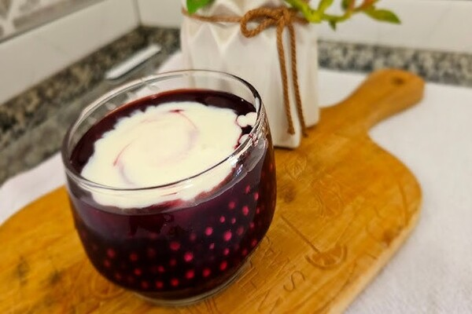

Sagu da Sogra: Um Doce Legado
INGREDIENTES:
- 1 xícara (chá) de sagu
- 2 xícaras (chá) de vinho tinto (½ garrafa)
- 1 xícara (chá) de suco de uva integral
- 1½ xícara (chá) de água filtrada
- 1 xícara (chá) de açúcar
- 2 canelas em pau
- 5 cravos-da-índia
MODO DE PREPARO:
Em uma tigela, adicione o sagu e cubra com água filtrada e o suco de uva. Deixe descansar por 1 hora. Quando faltar 15 minutos para completar o tempo de descanso, coloque o vinho, a canela, os cravos e o açúcar em uma panela média. Mexa bem até o açúcar dissolver. Leve a mistura ao fogo alto. Quando começar a ferver, adicione o sagu (com o líquido restante da tigela) e abaixe o fogo. Cozinhe por cerca de 30 minutos, ou até que as bolinhas do sagu fiquem macias e quase transparentes. Mexa sempre para evitar que o sagu grude no fundo da panela.
Desligue o fogo, retire os cravos e a canela e transfira o sagu para uma tigela. Deixe esfriar por completo em temperatura ambiente, nesse tempo, as bolinhas terminam de cozinhar no calor residual e a sobremesa atinge a consistência ideal. Após esfriar, cubra a tigela e leve à geladeira por no mínimo 30 minutos. Sirva gelado, acompanhado de um delicioso creme. Receita aqui.
Dica: Retire da geladeira alguns minutos antes de servir e mexa bem com uma colher para redistribuir as bolinhas no líquido.
A História por trás da Receita
Um dia minha Sogra me levou para conhecer o Centro de Tradições Gaúchas, na Bahia, lá conheci uma sobremesa muito gostosa o Sagu, feita com vinho e servido com um creme delicioso. Pedi para minha Sogra me ensinar a fazer o Sagu. Ela, com sua calma, me mostrou o passo a passo: o ponto certo das bolinhas de mandioca, como escolher o vinho e o tempo necessário para cozinhar.
Quando fiz o sagu em casa, pela primeira vez, vi o sorriso do meu marido, que claramente havia aprovado. A partir dali, passei a fazer o sagu de vez em quando, não apenas para agradá-lo, mas também porque percebi que era mais do que apenas uma receita; era uma forma de carinho que, aos poucos, foi ganhando mais significado para a nossa família